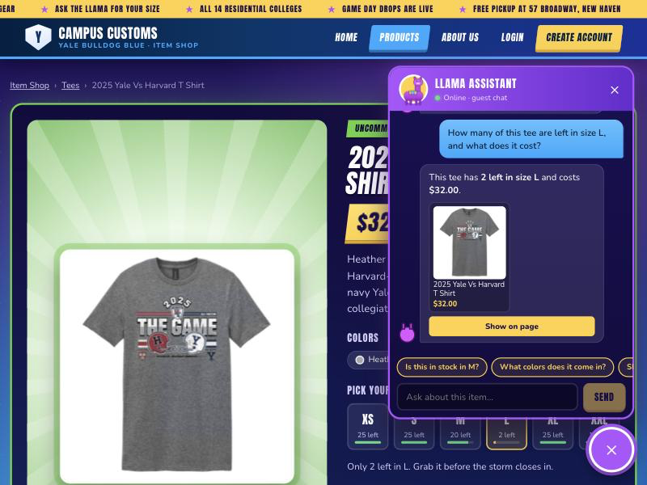
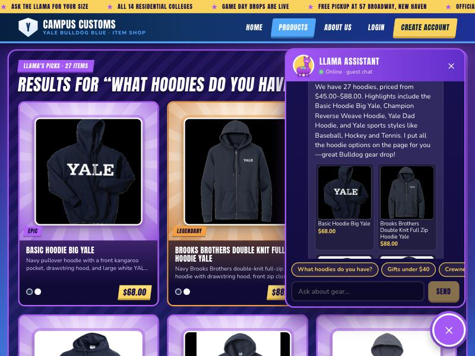
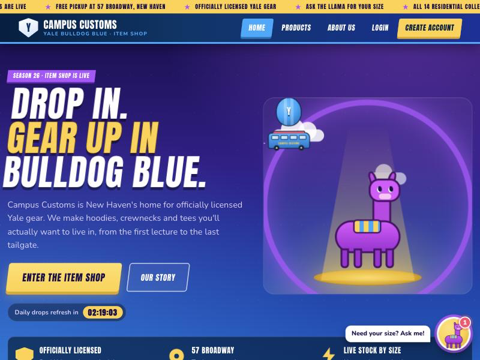

Homework 4 · Problem 11 · Screenshots taken from the running app (React + Vite on :5173, FastAPI + PydanticAI agent on :8000).
Required check 1
1. Chat checks the inventory level of an item

On the 2025 Yale vs Harvard T-shirt page, the shopper asks "How many of this tee are left in size L, and what does it cost?" The agent knows which item "this tee" means from the page context. It calls its stock tool and answers 2 left in L, $32.00, which matches the "L · 2 left" size meter on the page.
Database check: inventory row (2025-yale-vs-harvard-t-shirt, L) → quantity 2; catalogue.price → 32.0. A price fact-checker rejects any dollar amount in a reply that didn't come from a tool result.
Required check 2
2. Dynamic search-result cards after a category question

The shopper asks "What hoodies do you have?" The agent searches the catalogue and returns product IDs. The backend turns those IDs into cards from the database, and the page shows a "Llama's picks · 27 items" shelf with image, name, price and short info. Each card opens the full product page when clicked.
The count (27) and the price range ($45.00–$88.00) are calculated by the search_catalogue tool, not by the model.
The new filter bar narrows 102 items to 21 hoodies in stock in size M, sorted by price, in two clicks. Each category tab shows a live count, and the filters are saved in the URL (/products?cat=hoodies&size=M&stock=1&sort=price-asc), so this view can be shared or bookmarked.
Database check: 21 hoodies have quantity > 0 in size M, the same number the page shows.
On the Baseball Left Chest Crewneck page, "Do you have this in XS?" gets a clear out of stock in XS, plus the sizes that are still available. The new find_alternatives tool then puts six similar crewnecks that do come in XS on the page. Quick-reply chips under the chat ("Is this in stock in M?", "What colors does it come in?") change with the page.Bonus
5. Storefront design (Problem 10)

The Fortnite-style item shop in Yale blue: a scrolling announcement ticker, a CSS Battle Bus and loot llama, a daily-drops countdown, a trust strip, and the hopping llama chat button with its "Need your size? Ask me!" nudge. Everything is drawn in HTML/CSS.